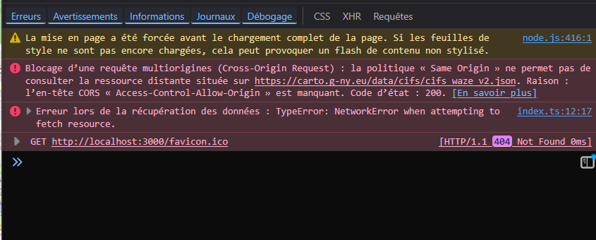
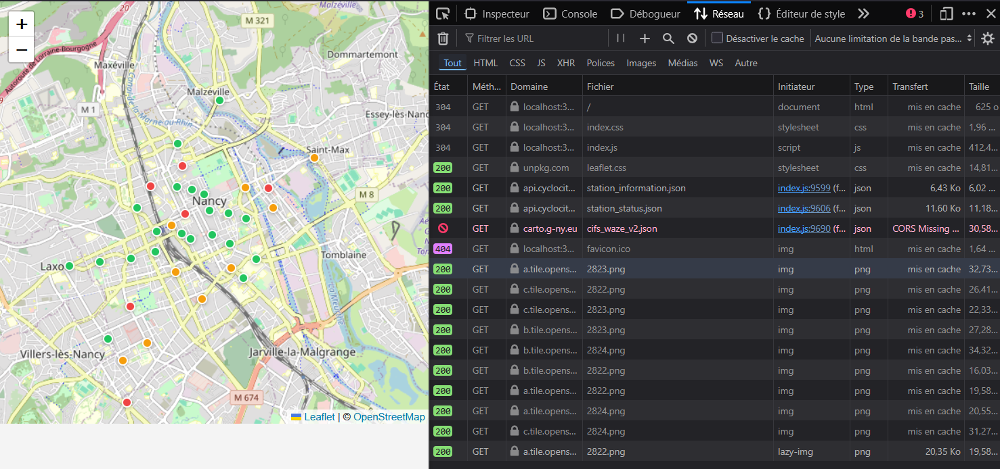
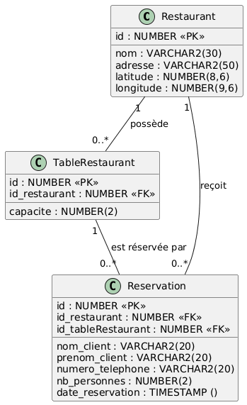

Compte rendu — Application Répartie (SAÉ S4-02)
Membres du groupe :
- Ambroise Gilbert
- Ianis Pocachard
- Louis Ardhuin
- Anastasia Tolkacheva
- Adrien Tritarelli
1. Introduction
1.1. Présentation du projet
Cette SAÉ consiste à développer une application répartie permettant d'afficher sur une carte Leaflet des informations concernant la ville de Nancy. L'application regroupe des données issues de plusieurs sources : stations VéloStan, restaurants enregistrés dans une base de données et incidents de circulation. Elle repose sur une architecture composée d'un client web, d'un proxy HTTP, de services RMI et d'une base de données Oracle.
1.2. Objectifs de la SAÉ
L'objectif est de mettre en œuvre les concepts de programmation répartie en faisant communiquer plusieurs composants distants. Le projet mobilise notamment Java RMI, JDBC, les services web, les API ouvertes et le développement d'une interface web. Il permet également d'aborder les problématiques de déploiement, de communication réseau et d'architecture logicielle.
1.3. Fonctionnalités réalisées
- Consultation des stations VéloStan
- Consultation des restaurants
- Consultation des incidents de circulation
- Réservation de tables de restaurant
2. Architecture générale
2.1. Vue d'ensemble de l'application
- Frontend Web
- Proxy HTTP
- Service Base de Données
- Service Incidents
- Base Oracle
2.2. Architecture répartie
- HTTP : navigateur vers proxy
- RMI : proxy vers services
- JDBC : service vers Oracle
- HTTP : service vers API externes
2.3. Diagramme d'architecture

3. Frontend Web
3.1. Technologies utilisées
- TypeScript
- Leaflet
- HTML / CSS
- esbuild
3.2. Organisation du code frontend
Le frontend a été organisé en plusieurs modules TypeScript afin de séparer les responsabilités.
Le dossier http contient les fonctions chargées d'interroger les API ou le proxy HTTP.
Le dossier types contient les interfaces TypeScript correspondant aux données manipulées
par l'application, comme les stations VéloStan, les incidents, les restaurants et les réservations.
Le module map regroupe le code lié à la carte Leaflet avec l'initialisation de la carte, la création des
marqueurs et association des popups. Enfin, le module ui orchestre l'affichage général, le
chargement des données, l'insertion de la liste latérale, les formulaires de réservations et les modales popup.
3.3. Gestiond de l'interface utilisateur
L'interface affiche une carte Leaflet centrée sur Nancy, accompagnée d'une liste des stations VéloStan. Les stations, les incidents et les restaurants sont représentés par des marqueurs. Lorsqu'un utilisateur clique sur un restaurant puis sur le bouton réserver, une popup permet d'ouvrir un formulaire de réservation. Le formulaire récupère les informations utiles puis ces informations sont ensuite envoyées au proxy HTTP naturellement au format JSON puisque JavaScript (ici TypeScript) permet de convertir nativement un objet en Json.
La gestion des erreurs côté frontend a été définie en cohérence avec le proxy HTTP. Nous avons convenu
d'utiliser des codes HTTP distincts selon la nature du problème : succès avec un code 200, requête invalide
avec un code 400, réservation impossible avec un code 409, erreur de communication avec un service RMI avec
un code 502 et service indisponible avec un code 503. Les fonctions du dossier http interprètent
ces codes avec response.status, puis lèvent une erreur TypeScript contenant un message adapté
à l'utilisateur.
Cette séparation permet d'éviter de mélanger la logique d'affichage et la logique réseau. Les fichiers
restaurants_api.ts et incidents_api.ts s'occupent de transformer les réponses HTTP
du proxy en données exploitables ou en erreurs compréhensibles. Le module ui.ts récupère ensuite
ces erreurs dans des blocs try/catch et les affiche dans une popup informative.
4. Gestion des données externes
4.1. API VéloStan
4.2. API Incidents
4.3. Problématique CORS
L'API des incidents ne pouvait pas être appelée directement depuis le navigateur à cause
de la politique CORS. Lorsqu'un navigateur bloque une requête CORS, le frontend ne reçoit pas un
code HTTP exploitable : l'appel fetch échoue directement. Pour contourner ce problème,
le frontend tente d'abord d'appeler l'API directement, puis utilise le proxy HTTP en solution de repli
si l'appel direct échoue.


4.4. Solution mise en œuvre
La solution repose sur un client HTTP Java exposé comme service RMI. Ce service implémente
l'interface InterfaceIncidents et fournit une méthode permettant de récupérer les données
de l'API incidents. Au démarrage, le service incidents récupère le service RMI du proxy (ce qui s'apparent à un service central dans notre architecture) en passant par l'annuaire puis s'enregistre
auprès de lui grâce à la méthode dédiée. Le proxy peut ensuite appeler ce service lorsqu'il reçoit une requête HTTP sur le endpoint /api/incidents.
Le navigateur ne contacte donc plus directement l'API bloquée lorsqu'une erreur CORS survient puisqu'il contacte le proxy en stratégie de replie. Le proxy appelle alors le service RMI incidents, qui effectue la requête HTTP côté serveur Java. Comme cette requête n'est plus faite par le navigateur, elle n'est pas soumise aux mêmes restrictions CORS. Le JSON obtenu est ensuite renvoyé au frontend.
5. Proxy HTTP
5.1. Rôle du proxy
Le proxy sert de passerelle entre le frontend TypeScript et les services backend Java. Il a deux fonctions principales :
- Exposer un serveur HTTP sur le port 8080
- Faire relais vers des services distants via RMI :
- service des incidents
- service de base de données / réservations
5.2. Classe Proxy
La classe Proxy s'occupe de lancer le serveur HTTP dès l'instanciation.
La classe stocke les services RMI :
- pour la gestion des incidents (
incident) - pour la requêtes vers la base de données (
restaurant)
Point important : le serveur HTTP est lancé dans le constructeur, donc le proxy démarre même si les services RMI ne sont pas encore branchés.
5.3. Classe ProxyHandler
Cette classe est celle qui s'occupe du routage en lui même. C'est dans celle-ci que la requête envoyé par le client HTTP (navigateur de l'utilisateur) est traité et que les appels RMI necessaires sont effectués
Dans le cadre de la résolution de l'erreur CORS, cette classe ajoute les entêtes :
- Access-Control-Allow-Origin: *
- Access-Control-Allow-Methods: GET, POST, OPTIONS
- Access-Control-Allow-Headers: Content-Type
De la même manière, la méthode OPTION est gérée pour prendre en compte le CORS preflight du navigateur
5.4. Routage des requêtes
L'API comporte plusieurs endpoint :
GET /api/bd/restaurantsPOST /api/bd/reserverOPTION /api/bd/reserverGET /api/incidents
5.4.1 /api/bd/restaurants
Retourne les coordonnées des restaurants.
Appelle côté serveur la méthode RMI : restaurant.getCoordonneesRestaurants()
Réponse
- 200 OK
- Corps: JSON renvoyé par le service RMI de la base de donnée
Erreurs possibles
- 503 Service Unavailable
- si le service RMI de base de données n'est pas enregistré dans le proxy
- si l'appel RMI échoue à cause d'un problème réseau
5.4.2 /api/bd/reserver
Cet endpoint permet de créer une réservation dans la base de données
Le proxy lit un corps JSON contenant les informations de réservation, puis délègue au service RMI de base de données la tâche de vérifier si la réservation est possible et la création de la réservation.
Corps JSON attendu (exemple)
{
"idRestaurant": 12,
"date": "2026-06-12T19:30",
"nbPersonnes": 4,
"nom": "Dupont",
"prenom": "Marie",
"telephone": "0600000000"
}
Réponse
- 200 OK si la réservation aboutit
- Corps: JSON renvoyé par le service RMI de la base de donnée
Erreurs possibles
- 503 Service Unavailable
- si le service RMI de base de données n'est pas enregistré dans le proxy
- si l'appel RMI échoue à cause d'un problème réseau
- 400 Bad request
- si les types des parametres POST ne sont pas respectés
- 409 Conflict
- si la reservation est imposible parce que le restaurant est déjà plein
- 500 Internal Server Error
- si une erreur non prévue survient
5.4.3 /api/incidents
Cette route permet de contourner l'erreur CORS et de fournir l'API des incidents/travaux au frontend
Réponse
- 200 ok
- Corps: JSON renvoyé par le service RMI qui intéroge l'API des incidents
Erreurs possibles
- 503 Service Unavailable
- si le service RMI n'est pas enregistré dans le proxy
- si l'appel RMI échoue à cause d'un problème réseau
6. Services RMI
6.1. Principe de Java RMI
Java RMI (Remote Method Invocation) permet à une application Java d'appeler des méthodes exécutées sur une autre machine comme s'il s'agissait d'objets locaux. Dans notre projet, cette technologie est utilisée pour permettre au proxy de communiquer avec les services distants de gestion des restaurants et des incidents, sans que leur implémentation soit accessible par la page web.
6.2. Service Incidents
Le service Incidents a pour rôle de récupérer les données de circulation de la Métropole du Grand Nancy depuis une API externe. Comme cette API ne peut pas être interrogée directement depuis le navigateur à cause des restrictions CORS, elle est appelée par un service Java distant accessible via RMI. Le proxy utilise ensuite ce service pour obtenir les données et les transmettre au client web au format JSON.
-
InterfaceIncidents: interface RMI définissant la méthode distantefetchAPIIncidents(), utilisée par le proxy pour récupérer les données d'incidents. -
ClientHTTPIncidents: implémentation du service. Cette classe utilise l'APIHttpClientde Java pour envoyer une requête HTTP à l'API des incidents, vérifier le code de réponse et gérer les erreurs réseau avant de renvoyer les données JSON au proxy. -
LancerServiceIncidents: programme de démarrage du service. Il exporte l'objet distant, se connecte au registre RMI puis enregistre automatiquement le service auprès du proxy afin qu'il puisse être utilisé par l'application.
6.3. Service Base de Données
Le service Base de Données permet au proxy d'accéder aux informations stockées dans la base Oracle. Il expose deux fonctionnalités principales : la récupération des coordonnées des restaurants afin de les afficher sur la carte, et la réservation d'une table en enregistrant les informations fournies par l'utilisateur. Les échanges avec le proxy sont réalisés via Java RMI et les réponses sont renvoyées au format JSON.
-
ServiceDatabase: interface RMI définissant les méthodes distantes permettant de récupérer les restaurants et d'effectuer une réservation de table. -
LancerServiceDatabase: programme de démarrage du service. Il initialise la base de données, charge les données des restaurants et des tables depuis les fichiers JSON, exporte le service RMI puis l'enregistre auprès du proxy afin qu'il puisse être utilisé par l'application web.
6.4. Communication entre proxy et services
Le proxy constitue le point d'entrée unique de l'application côté serveur. Les services Incidents et Base de Données s'enregistrent auprès de lui via le registre RMI lors de leur démarrage. Lorsqu'une requête HTTP est reçue depuis le navigateur, le proxy analyse l'URL demandée puis invoque la méthode distante correspondante sur le service concerné.
Les appels concernant les restaurants sont transmis au service de base de données, tandis que les demandes relatives aux incidents sont redirigées vers le service de récupération des données externes. Le proxy joue ainsi le rôle d'intermédiaire entre le client web et les services RMI, tout en centralisant la gestion des requêtes HTTP, des réponses JSON et des erreurs réseau.
7. Base de données Oracle
7.1. Modèle de données

7.2. Structure relationnelle
La base de données est organisée autour de trois tables principales. La table
Restaurant stocke les informations des restaurants, notamment leur nom,
leur adresse et leurs coordonnées GPS. La table TableRestaurant représente
les tables disponibles dans chaque restaurant avec leur capacité. Enfin, la table
Reservation enregistre les réservations effectuées par les utilisateurs.
Restaurant: contient les restaurants affichés sur la carte.TableRestaurant: contient les tables associées aux restaurants.Reservation: contient les réservations des clients.
7.3. Accès JDBC
L'accès à la base Oracle se fait avec JDBC dans la classe Database. Cette
classe ouvre une connexion à la base, charge le pilote Oracle et centralise les opérations
principales comme le chargement des restaurants, des tables et la récupération des
coordonnées au format JSON.
7.4. Gestion des réservations
Lorsqu'une réservation est demandée, le service recherche d'abord le restaurant concerné, puis sélectionne les tables ayant une capacité suffisante. Il vérifie ensuite si une table est disponible à la date demandée avant de créer une nouvelle réservation contenant les informations du client, le nombre de personnes et la table attribuée.
7.5. Transactions
Les réservations sont gérées dans une transaction afin de garantir la cohérence des
données. L'auto-commit est désactivé, puis un commit est effectué si la
réservation réussit. En cas d'erreur ou d'indisponibilité, un rollback est
réalisé. Un verrou FOR UPDATE est aussi utilisé pour éviter qu'une même table
soit réservée simultanément par plusieurs utilisateurs.
8. Déploiement
8.1. Préparation de la base Oracle
Avant de lancer le projet, il faut créer la classe
src/main/java/database_service/Credentials.java afin d'y renseigner les
identifiants Oracle utilisés pour la connexion à la base de données.
public class Credentials {
public static final String USERNAME = "";
public static final String PASSWORD = "";
}
La base est ensuite créée et enrichie grâce au fichier database.sql, qui
contient les tables nécessaires au fonctionnement de l'application.
8.2. Compilation Maven
La partie Java du projet est compilée avec Maven. La commande
mvn clean compile permet de compiler les sources et de vérifier que les
dépendances nécessaires sont correctement prises en compte.
Pour tester la partie base de données, il est aussi possible d'utiliser la commande
mvn exec:java, qui lance la classe de test
database_service.Client.
8.3. Lancement du registre RMI
Le registre RMI doit être lancé afin de permettre aux services distants de s'enregistrer et d'être retrouvés par le proxy. Il est utilisé comme point central pour publier les objets RMI du projet.
8.4. Lancement des services
Les services RMI sont lancés séparément. Le service de base de données permet d'accéder aux restaurants et aux réservations, tandis que le service incidents interroge l'API externe des incidents de circulation. Chaque service s'enregistre auprès du proxy pour pouvoir être appelé à distance.
8.5. Lancement du proxy
Le proxy HTTP sert de passerelle entre le frontend et les services RMI. Il reçoit les requêtes du navigateur, les redirige vers le service correspondant, puis renvoie les données au format JSON.
8.6. Déploiement du frontend
Le frontend se trouve dans le dossier frontend. Il utilise TypeScript,
esbuild, Handlebars et Leaflet pour afficher l'application dans le navigateur et gérer
la carte interactive.
npm install
npm install leaflet
La structure principale du frontend est organisée autour de plusieurs dossiers :
index.html pour la page d'entrée, typescript/index.ts pour le
point d'entrée TypeScript, ui pour l'orchestration de l'affichage,
map pour la logique de carte, http pour les appels aux API,
types pour les types partagés et config pour la configuration
du projet.
9. Conclusion
9.1. Bilan du projet
Cette SAÉ nous a permis de concevoir une application répartie complète combinant une interface web, des services RMI, un proxy HTTP et une base de données Oracle. Les objectifs fixés ont été atteints avec l'affichage des stations VéloStan, des restaurants, des incidents de circulation ainsi que la mise en place d'un système de réservation.
9.2. Compétences acquises
Ce projet nous a permis d'utiliser de façon concrète les notions abordées dans les différentes matières : architecture logicielle, développement web, accès aux bases de données, communication réseau et programmation répartie. Nous avons également acquis de l'expérience sur Java RMI, JDBC, les API web, la gestion des erreurs réseau et le déploiement d'une application sur plusieurs machines.
9.3. Améliorations possibles
Plusieurs évolutions pourraient être envisagées afin d'améliorer l'application et son expérience utilisateur.
- Ajout d'un système d'authentification pour les utilisateurs.
- Gestion des annulations et modifications de réservations.
- Amélioration de l'interface utilisateur et des formulaires.
- Ajout de nouvelles sources de données ouvertes sur la métropole.
- Déploiement automatisé des différents services.